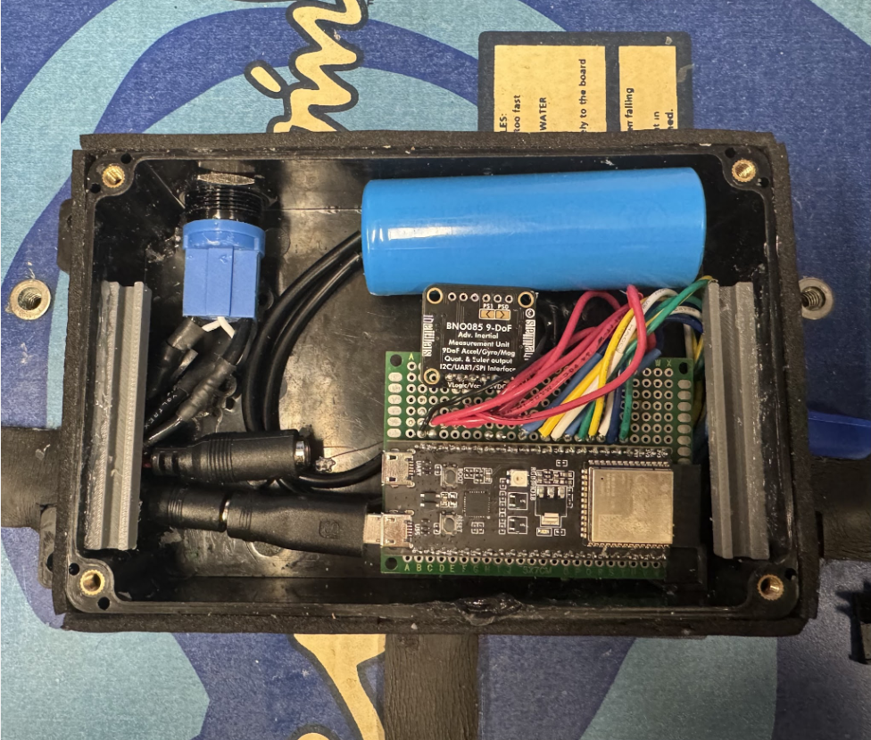
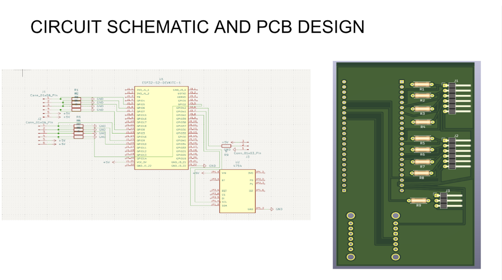
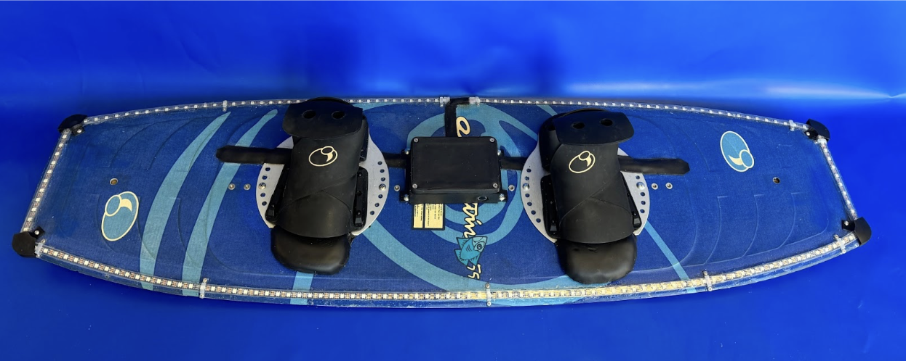

Real-time LED feedback system helping beginner wakeboarders master balance on the water
Learning to wakeboard is tough—beginners struggle to distribute their weight correctly while being towed across water. Without real-time feedback, it's hard to know if you're putting too much pressure too far forward, backward, or to one side. We set out to create a smart wakeboard that gives immediate visual feedback to help learners improve their balance.
Hardware Stack:
Key Features:



We iterated through multiple prototypes, testing waterproofing methods, sensor placement, and feedback algorithms. The biggest challenge was making the electronics survive in water. We learned the importance of proper sealing techniques.
The custom PCB was a major improvement from our breadboard prototype. It reduced assembly time, improved reliability, and made the overall system much more compact and water-resistant.
Our final prototype successfully provided real-time balance feedback and survived multiple water tests. The LED system clearly indicated when users needed to shift weight. The system has not been tested while actually wakeboarding yet, but has been tested in a static environment
This project taught me the full hardware development cycle — from concept to CAD to PCB fabrication to real-world testing. Creating a product for an extreme environment (water) pushed me to think critically about external forces and how critical testing is.